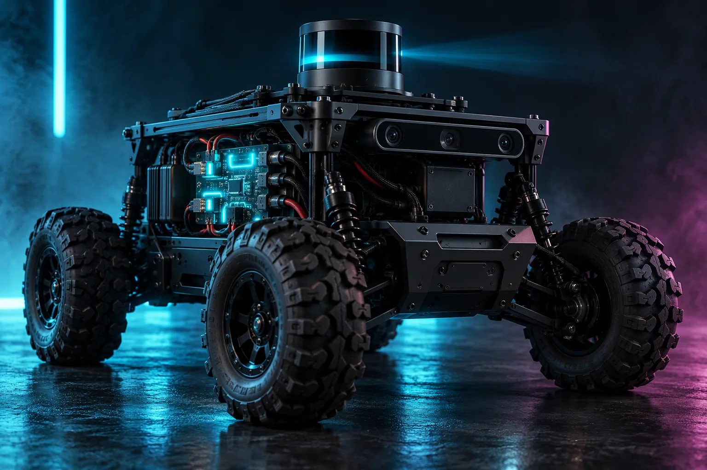
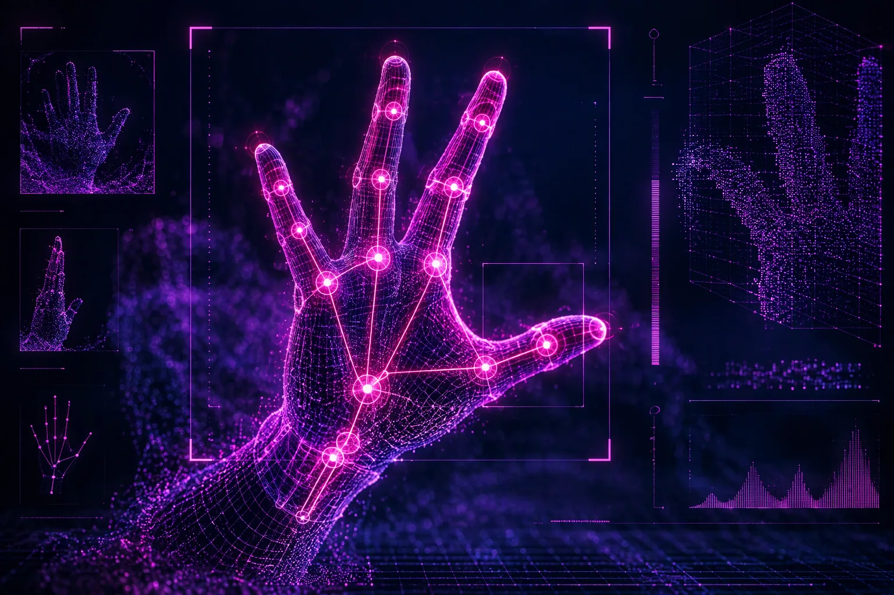
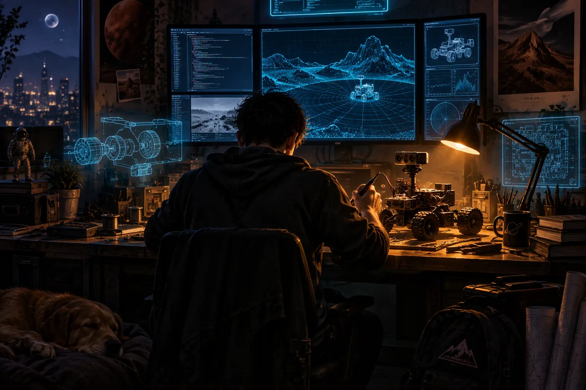

01
Applied AI & Vision
Real-time computer vision, hand-joint kinematics tracking, multi-modal security verification and interactive voice-driven AI agents — running at the edge, not in a distant cloud.
APPLIED AI · ROBOTICS · UNIFIED INTERFACES · OPEN TECHNOLOGIES
Bridging Intelligence, Hardware, and Human Control.
An engineering & R&D company building unified hardware–software ecosystems — universal microcontroller abstraction, autonomous robotics, custom human-interface devices and applied edge-AI, under one clean API.
// CORE ENGINEERING
Every AARUIOT product shares the same DNA — perception, motion, control and connectivity designed as a single stack, not bolted together after the fact.
Real-time computer vision, hand-joint kinematics tracking, multi-modal security verification and interactive voice-driven AI agents — running at the edge, not in a distant cloud.
High-torque mobile rovers with 2D 360° LiDAR SLAM navigation, depth-camera perception, edge-compute integration and custom high-current power-distribution PCBs.
Zero-dependency, multi-architecture hardware libraries — AARUESP and AARUARDUINO — unifying 18,000+ sensors, displays and protocols under one clean API, alongside custom BLE HID controllers.
Asynchronous embedded OS frameworks, real-time WebSocket telemetry and self-hosted developer & automation infrastructure — open building blocks for connected machines.
// FLAGSHIP PROJECTS
The flagship programs where the four pillars meet physical hardware — live open-source libraries and in-house R&D platforms.
Universal hardware abstraction for ESP32 / ESP8266 — 18,000+ sensors, actuators and protocols across 200+ boards, driven by one clean, zero-dependency API.
Cross-architecture unified embedded framework for AVR, MegaAVR and Renesas — 1,000+ modules with a single consistent API and a live documentation site.

All-terrain mobile robotics platform powered by 2D 360° LiDAR, depth cameras and edge-AI compute — with custom high-current power distribution.

Real-time vision-to-kinematics robotic control and standalone wireless gaming / control interfaces — your hand becomes the controller.
// OPEN ECOSYSTEM · LIVE FROM GITHUB
Operating systems, smart gardens, chat engines, games and answer engines — every public repository, synced live from @AARUTO347.
Fetching live repository data from GitHub…

// THE FOUNDER STORY
It started the way most obsessions do — with a board that wouldn't blink. Abhishek Aaruto Solanki spent his nights reverse-engineering kernels, building custom Linux distributions and teaching himself how machines think from the metal up. Every failed flash, every kernel panic, every 2 a.m. breakthrough became fuel.
Then came robotics — and with it, the pain every embedded builder knows: a thousand libraries, a thousand APIs, none of them speaking the same language. Instead of accepting it, he wrote AARUARDUINO and AARUESP: one clean API over thousands of sensors, displays and protocols, so the next builder wouldn't have to fight the same war.
The first rover that mapped a room on its own. The first time a camera read his hand and the machine obeyed. That was the moment AARUIOT became inevitable — intelligence, hardware and human control were never meant to live in separate silos. They were meant to ship as one product.
“I don't want to write code that only lives on a screen. I want to build things that move, see, and answer when a human reaches out — and make that power available to everyone.” — Abhishek Aaruto Solanki
// WHAT'S NEXT
A glimpse of what the lab is building next. Timelines are targets, not promises — hardware ships when it's right.
An open, hackable rover platform with SLAM out of the box — LiDAR, depth camera and edge compute on a documented power PCB.
RoboticsA standalone BLE HID with on-device gesture AI — control games, rovers and desktops with nothing but your hand.
Applied AIA community registry for the 18,000+ component ecosystem — one-line installs, verified drivers, versioned pin maps.
InterfacesSelf-hostable realtime fleet telemetry — WebSocket dashboards, OTA updates and automation hooks for every connected build.
Open Tech// OPEN A CHANNEL
Product builds, partnerships, open-source collaboration or press — send a signal and it lands directly in the lab's inbox.
Typical response time: within 48 hours.